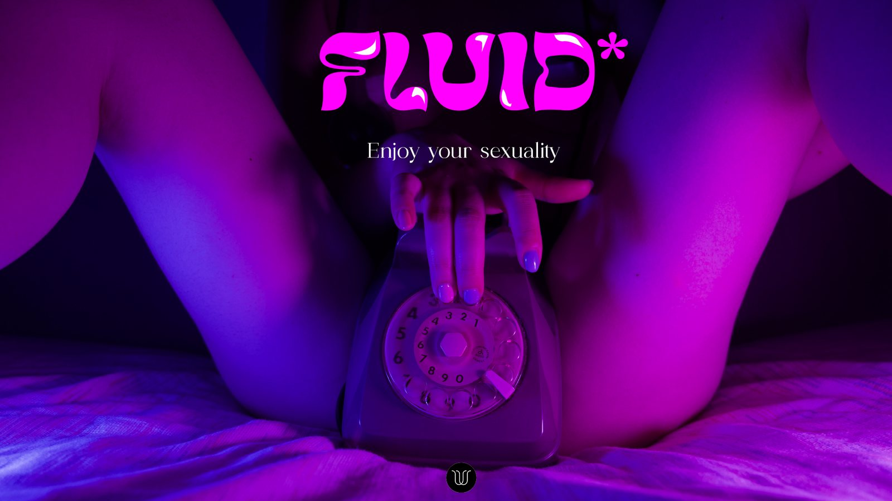

FLUID*
FLUID* è l'evento che ho progettato per la tesi in Communication Design, in collaborazione con WOVO, un concept store che parla apertamente di temi ancora considerati tabù. L'idea: un festival edutainment di un giorno, dove si impara divertendosi, al Superstudio Più di Milano.
Ho curato ogni parte: nome e logo, allestimento degli spazi, programma (exhibition, workshop, talk e party), pass e gadget, canali social, sito, comunicato stampa e una campagna unconventional per Milano.